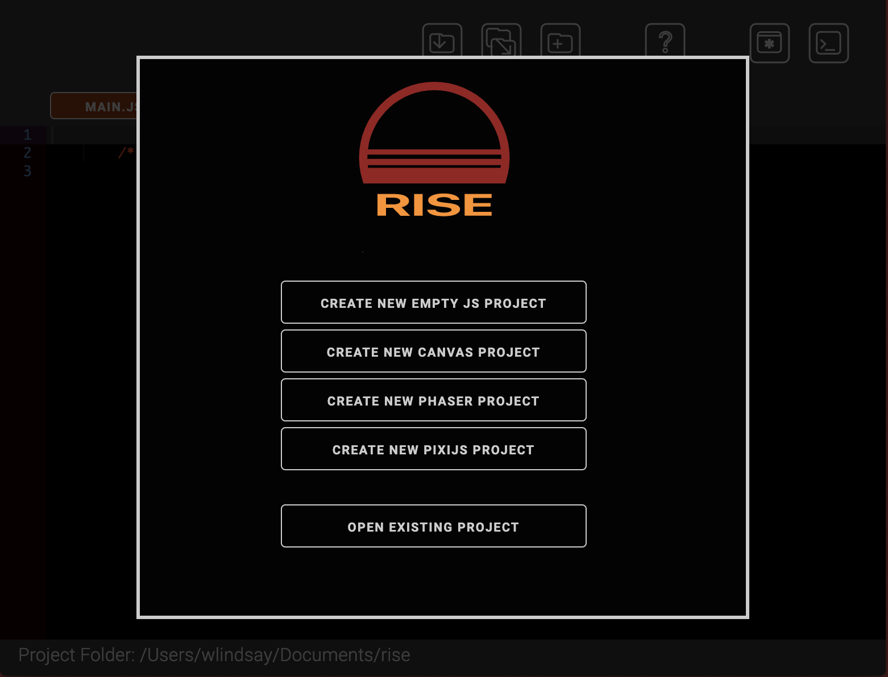
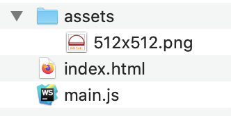
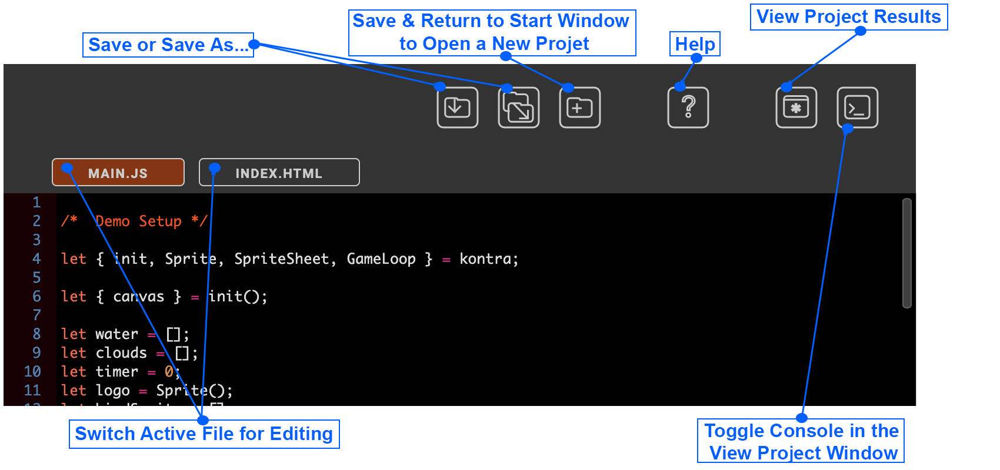

Getting Started with RISE
Once you've downloaded and installed RISE, you are greeted with the start screen. From here, you can select one of several templates or open an existing file. A set of example files can be found on the download page that include small programs from various JavaScript frameworks.
Each template creates a blank shell for the selected framework, where you can start tutorials or your own project.
To create a template, you must enter the name of your project (this will be the folder name). Then navigate to the folder where you will store your work.
The template created will include a vanilla index.html file, and a linked main.js file where your game or project can be created. An assets folder is also created to store images, audio or other media.
RISE will only open existing projects that use this file format.
Once you’ve opened a project or template, the main editor window is exposed. All file actions can be done from the buttons at the top of the window. Hovering over any button shows a reminder of its function.
